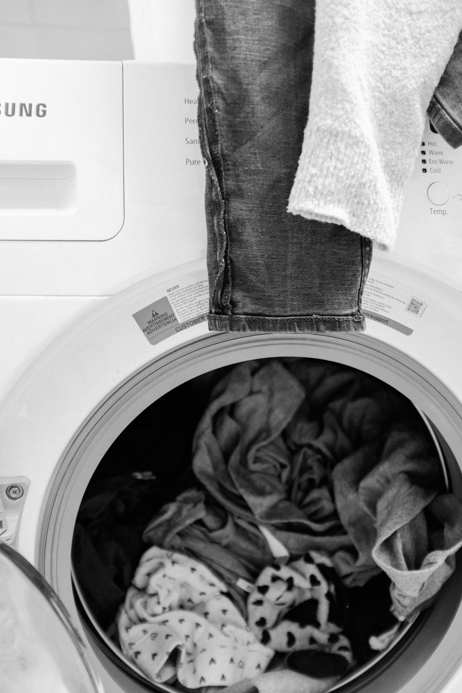

Short answer: wash a printed blanket in cold water on a gentle cycle with mild detergent, and let it air dry flat. Heat is the enemy of every printed design, whether sublimation, DTG, or vinyl. Turn the blanket inside out, skip the fabric softener, and never wring it out. Follow this routine and the best printed blankets keep their color for years, not months.

Why Printed Blankets Fade
I have tested dozens of printed blankets in a care lab setting and at home, and fading almost always comes down to three forces: heat, friction, and chemistry. Heat from dryers and hot water loosens the bond between ink and fiber. Friction from agitators, zippers, and rough wash partners wears the print surface. Chemistry covers bleach, optical brighteners, and fabric softeners, all of which degrade or coat the printed area.
The Correct Washing Routine, Step by Step
This is the routine I give to every client who buys a photo blanket:
- Turn the blanket inside out or place it in a mesh laundry bag
- Wash alone or with similar soft items, never with towels, jeans, or anything with zippers
- Use cold water and the gentle or delicate cycle
- Add mild liquid detergent, and skip fabric softener entirely
- Skip the dryer; air dry flat or drape over a drying rack away from direct sunlight
- Reshape while damp so the blanket dries square
Wash Settings and Their Effect on Prints
| Setting | Effect on the Print | Recommendation |
|---|---|---|
| Cold water, gentle cycle | Minimal stress on ink and fibers | Use every time |
| Warm water, normal cycle | Slight fading accumulation over many washes | Occasional use only |
| Hot water, any cycle | Accelerated fading, can shrink backing fabrics | Never |
| Tumble dry low | Slow print dulling and edge curling | Emergency use only |
| Tumble dry high | Fast fading, bubbling of vinyl prints, sherpa matting | Never |
| Fabric softener | Coats fibers, makes prints look cloudy | Never |
Drying Without Damage
Air drying is the single most protective habit you can build. Lay the blanket flat on a rack or clean surface, or drape it so the weight is distributed. Direct sunlight is a slow bleaching agent, so dry in shade indoors. If you absolutely must use a dryer, choose the no-heat air fluff setting and pull the blanket out while still slightly damp.
Removing Stains Safely
Treat stains before the wash, not with more wash. Blot the stain with cold water and a drop of mild detergent, working from the outside inward. For set-in stains, a paste of gentle detergent and cold water left for thirty minutes usually does it. Never apply bleach or stain pens directly to a printed area, and never scrub with a brush; blotting protects both the print and the fiber.
How Often Should You Wash a Printed Blanket?
Wash it when it needs it, not on a schedule. Decorative blankets that live on a sofa arm might need washing a few times a year. A nightly-use photo blanket should be washed monthly or so. Every avoided wash cycle is a little extra print life, which is why spot cleaning small marks matters. Pair this routine with proper off-season care from our guide to storing personalized gifts and your blanket will outlast the furniture it sits on.
Frequently Asked Questions
Can printed blankets go in the dryer?
Avoid it. Tumble drying, even on low, gradually dulls prints and can bubble vinyl designs or mat sherpa backing. Air drying flat or on a rack keeps the print intact for years.
What temperature should I wash a photo blanket?
Cold water only. Hot water accelerates fading and can shrink the backing fabric, while cold water with a gentle cycle removes dirt without stressing the printed design.
Why is fabric softener bad for printed blankets?
Softener coats fibers in a waxy layer that clouds the print and reduces breathability. It offers no benefit for printed textiles and slowly degrades how the design looks.
How do I remove stains from a printed blanket?
Blot with cold water and mild detergent, working from the stain's edge inward, then wash cold on gentle. Avoid bleach, stain pens, and scrub brushes anywhere near the print.